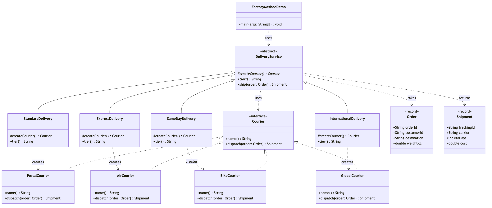

Factory Method Pattern
Demonstrates the Factory Method creational pattern (Gang of Four) using e-commerce delivery tiers as an example.
Courier— the product interface every carrier implements.PostalCourier,AirCourier,BikeCourier,GlobalCourier— the concrete products, each with its own speed, pricing and tracking prefix.DeliveryService— the abstract creator. It ownsship(...), the workflow every tier shares, and declares the factory methodcreateCourier()that subclasses must fill in. It never names a courier class.StandardDelivery,ExpressDelivery,SameDayDelivery,InternationalDelivery— the concrete creators. Six lines each: pick a courier, name the tier.Order/Shipment— simple value objects passed to and returned from a courier.FactoryMethodDemo— runnable entry point that ships the same order four different ways.
There is no switch and no if on a tier name anywhere in this project. That is the point: adding a fifth tier means adding a file, never editing one.
Run
./gradlew runWhich prints:
Standard: preparing ORD-2001 for Edinburgh via Royal Post
Royal Post: dropping ORD-2001 into the postal network
Standard: booked RP-FB66A083, arriving in 5 day(s)
Shipment: Shipment[trackingId=RP-FB66A083, carrier=Royal Post, etaDays=5, cost=5.24]
Express: preparing ORD-2001 for Edinburgh via SkyLink Air
SkyLink Air: booking ORD-2001 onto tonight's flight
Express: booked SL-3B5DD59E, arriving in 2 day(s)
Shipment: Shipment[trackingId=SL-3B5DD59E, carrier=SkyLink Air, etaDays=2, cost=15.5]
Same Day: preparing ORD-2001 for Edinburgh via CityRide Bikes
CityRide Bikes: assigning a rider to ORD-2001 right now
Same Day: booked CR-B42EC524, arriving in 0 day(s)
Shipment: Shipment[trackingId=CR-B42EC524, carrier=CityRide Bikes, etaDays=0, cost=8.75]
International: preparing ORD-2001 for Edinburgh via TransWorld Freight
TransWorld Freight: filing customs papers for ORD-2001
TransWorld Freight: handing over to the destination carrier in Edinburgh
International: booked TW-FAC23427, arriving in 9 day(s)
Shipment: Shipment[trackingId=TW-FAC23427, carrier=TransWorld Freight, etaDays=9, cost=29.25]The identifiers are generated per run, so the transaction, order and tracking codes differ each time; everything else is stable.
Test
./gradlew testLearning Material
Start here if you are new to the pattern — the docs are ordered as a learning path.
| Document | What it covers |
|---|---|
docs/prerequisites.md | What to know and install before you start |
docs/problem-statement.md | The problem the pattern solves, and why the naive approach hurts |
docs/factory-method-pattern-explained.md | The pattern itself, the code walked through, pitfalls, and comparisons |
docs/class-diagram.md | Static structure |
docs/uml-diagram.md | Runtime call flow |
docs/animation.html | Animated, step-by-step walkthrough — open in a browser. Optional narration via the Narration button |
docs/session.md | A 60-minute guided session plan for teaching it |
docs/youtube.md | Title, description, chapters and thumbnail for publishing the video |
docs/thumbnail.png | The 1280×720 image to upload as the YouTube thumbnail |
docs/spec.md | The project specification — problem, code, video and publishing quality bar. Also as spec.html |
video/ | A narrated ~8 minute video, plus the script and build pipeline |

The pattern in one picture

Video
video/factory-method-pattern-explained.mp4 — 1080p, ~8 minutes, narrated. An audio-only version is alongside it. See video/README.md to rebuild or re-record it.
Related
../simple-factory-pattern — the simpler idiom this pattern grows out of. Both decide what gets built; Simple Factory does it with a switch in one class, Factory Method does it with inheritance. Reading them back to back is the fastest way to see why the Gang of Four bothered.